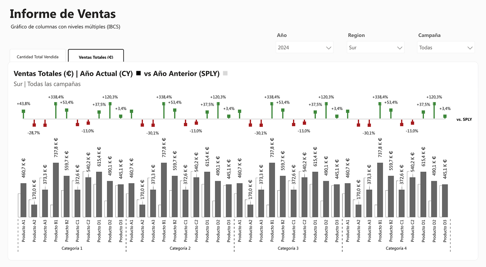
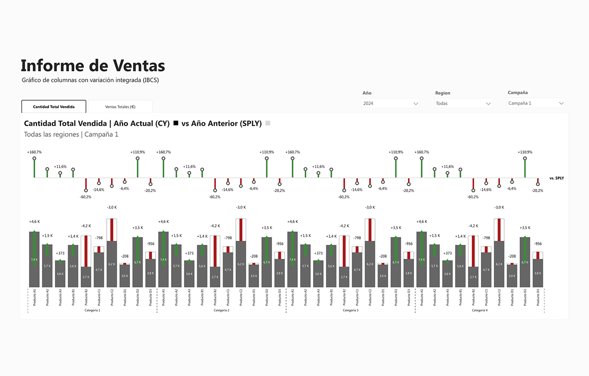
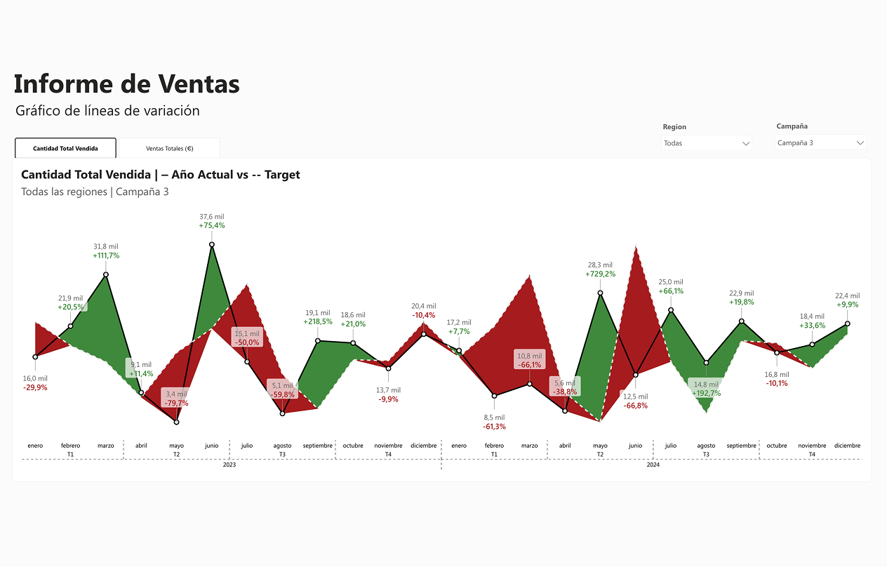

Informe de ventas con enfoque IBCS
Power BI · volumen y variación en una sola lectura
scroll ↓
El problema
La cifra sube. Pero ¿qué está pasando por dentro?
Un informe de ventas puede mostrar un buen resultado y, aun así, esconder lo que está pasando.
En este proyecto rehice un informe de ventas en Power BI aplicando principios de IBCS para hacer más sencilla la comparación entre periodos, diferenciar resultados positivos y negativos y detectar variaciones de un vistazo.
La idea no era añadir más elementos al informe, sino conseguir que los datos se pudieran leer mejor.
01 · El punto de partida
Leer volumen y variación en una sola mirada.
Cuando analizo un informe de ventas, no quiero quedarme solo con el volumen vendido. También necesito saber cómo ha cambiado respecto al periodo anterior y dónde están las principales variaciones.
Por eso planteé el informe alrededor de dos preguntas muy sencillas: cuánto hemos vendido y qué ha cambiado.
Así, volumen y variación conviven en el mismo espacio visual, sin obligar a buscar la información en diferentes gráficos.
periodos comparados
formas de representar la variación
02 · IBCS
¿Qué es IBCS y por qué lo aplico en Power BI?
IBCS (International Business Communication Standards) es un conjunto de recomendaciones para hacer que los informes de negocio sean más claros, comparables y fáciles de interpretar. En Power BI, sus principios se pueden aplicar a elementos como el uso del color, la notación, la estructura de los gráficos y la forma de mostrar comparaciones y variaciones.
En este proyecto lo utilizo como una guía de diseño para que el informe no dependa solo de elementos visuales llamativos, sino que mantenga una lógica común a lo largo de todo el análisis. La idea es sencilla: que una persona pueda entender qué está pasando en los datos sin tener que aprender un lenguaje visual diferente en cada gráfico.
IBCS como punto de partida, no como decoración. Para construir el informe utilicé sus principios desde el inicio: en lugar de decidir cómo representar cada dato de forma aislada, establecí unas reglas comunes para todo el informe: qué significa cada color, cómo mostrar las variaciones y cómo comparar diferentes periodos. Esto me permitió mantener una estructura visual coherente y centrarme en una pregunta más importante: ¿se entiende lo que está pasando en los datos?
04 · Notación
Aplicar la notación, no solo el color.
Uno de los cambios que más me interesaba trabajar era la forma de representar las variaciones. En lugar de utilizar el color como único recurso, combiné color y notación para diferenciar los resultados positivos y negativos.
Así, el significado de la variación no depende únicamente de distinguir entre rojo y verde. Es un pequeño cambio visual, pero ayuda a que el informe sea más fácil de interpretar y más consistente.
Notación IBCS
Cuatro elementos, un mismo lenguaje visual.
05 · Variación
Tres formas de leer la misma variación.
Una misma diferencia entre periodos puede representarse de varias maneras. En este proyecto probé tres alternativas para ver cómo cambia la lectura según la representación utilizada. La comparación me ayudó a decidir qué solución funcionaba mejor dentro del informe y, sobre todo, a entender que elegir un gráfico no debería ser solo una cuestión estética.
01
Columnas con niveles múltiples
Permite ver simultáneamente el valor absoluto mensual, la variación absoluta respecto al año anterior y el porcentaje de cambio.
02
Columnas con variación integrada
Compacta esa información dentro de cada barra, útil cuando el eje tiene muchos elementos como productos o categorías.
03
Líneas de variación
Muestra la evolución temporal con el área entre la línea real y el target coloreada según si se supera o no el objetivo.
06 · Interacción
Un selector, no páginas duplicadas.
También quería evitar crear una página diferente para cada periodo de comparación. En Power BI resolví esta parte mediante un selector que permite cambiar la referencia del análisis manteniendo la misma estructura visual.
De esta forma, el usuario puede cambiar el periodo que quiere comparar sin perder el contexto ni tener que navegar entre diferentes páginas.
Esquema
07 · Aplicación en Power BI
Volumen y variación, en el mismo visual.
Aquí llevé los principios anteriores al informe final en Power BI. El objetivo era que el volumen de ventas y su variación pudieran leerse juntos, manteniendo una estructura sencilla y consistente. Probé diferentes representaciones hasta encontrar una solución que permitiera identificar rápidamente qué está ocurriendo y dónde se producen las principales diferencias. Más que buscar un visual llamativo, busqué que el gráfico ayudara a responder una pregunta concreta.



Dos periodos. El mismo total.
Aquí aparece una de las situaciones que más me interesaba mostrar: dos periodos pueden terminar con el mismo resultado total y, sin embargo, contar historias completamente diferentes.
Por eso no basta con mirar la cifra final. Al desglosar la variación podemos ver qué meses, productos o categorías están detrás del resultado y entender mejor qué ha cambiado.
Herramientas
Stack técnico
Power BI
Diseño y construcción del informe.
DAX
Medidas y lógica de análisis.
IBCS
Principios de notación y visualización.
09 · Conclusión
Seguir un estándar no limita el análisis.
Al trabajar en este proyecto entendí que aplicar un estándar visual no significa hacer todos los informes iguales.
Al contrario: tener unas reglas claras me permitió centrarme más en lo importante, que es cómo se relacionan los datos y qué necesita entender la persona que los consulta.
También me sirvió para trabajar algo que considero importante en Power BI: no elegir un visual porque queda bien, sino porque ayuda a explicar mejor los datos.
Del mismo total a la historia real que hay detrás.
Dashboard interactivo publicado en Power BI Service
Portfolio completo de Power BI